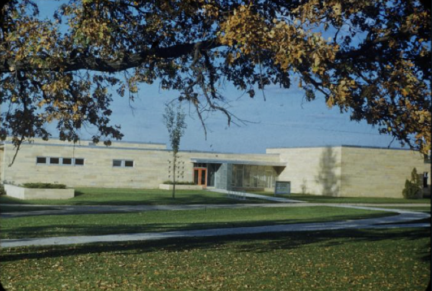
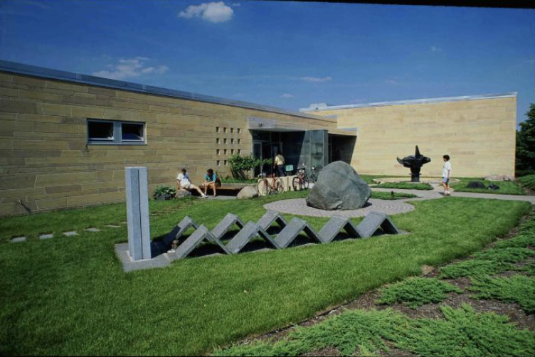

Boliou was originally built in 1949 under the architectural direction of Magney, Tusler, and Setter. The building was made in response to a lack of space and growing necessity for an art building at Carleton. The back side allows for natural lighting that stays stable year round. Boliou’s exterior is flat and lacks ornamentation, which is in tune with the Modern style it is a part of.

One of the first buildings constructed after World War 2, Carleton’s design philosophy changed from attempting to emulate the past and began to envision the future. This marks Carleton’s “Modern era”. The yellow lime stone is strikingly familiar to Willis Hall and Gould Libe.

The Boliou fountain in front was designed in 1966 by Raymond Jacobson. Fun fact - the fountain moves! Check it out for yourself below: